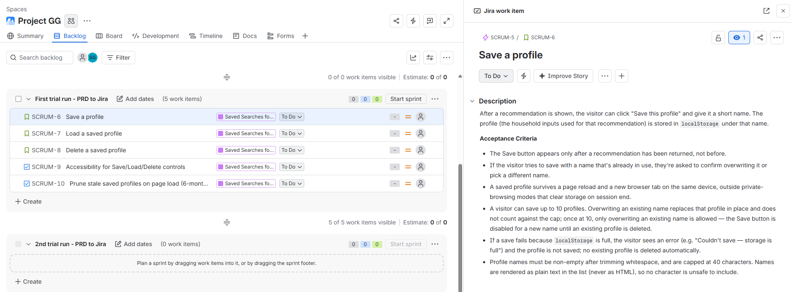

PRD to Jira Workflow
Problem
Turning a PRD into Jira issues usually means one of two failure modes: an agent that reads a rough draft and mechanically turns every section into a ticket, gaps and all, or a person doing it by hand and never noticing the PRD itself was missing a success metric or an acceptance criterion until an engineer asks about it mid-sprint. I wanted a workflow that catches PRD gaps before anything reaches Jira, actually fixes them with my input rather than just flagging them, and only then proposes how the work should be split into issues — with me approving both the PRD and the breakdown, not just the final click.
The other constraint was tool boundaries. A single agent with both PRD-editing judgement and live Jira write access is one agent whose one mistake reaches a real project. I wanted the critique, the editing, and the Jira write calls kept in separate hands, so a stray instruction in one stage couldn't silently trigger a write in another.
Approach
I split the work into two subagents plus one inline skill, each with a single job and its
own tool access, rather than one agent doing everything. prd-quality-reviewer
only ever reads and critiques a PRD against a fixed rubric — problem statement,
success metrics, scope, acceptance criteria, edge cases, non-functional requirements,
dependencies/risks, rollout plan — and has no write tools at all, so it can't have
changed anything by the time it hands back. improve-prd is a skill, not an
agent: it runs inline in the main conversation, sharing the reviewer's exact rubric, and
proposes concrete before/after text for each gap that I sign off on before it's written in.
jira-epic-builder is the only piece with Jira write access, and it's scoped to
run only after I've explicitly said the PRD is final.
I used this exact pipeline on a real PRD in this session: reviewed a draft, worked through every flagged gap in batches with concrete before/after text, then asked for a second independent review pass on my own fixes rather than assuming they'd landed correctly — which is what caught a retention requirement that named a policy but never said how it would actually be enforced, and an acceptance criterion that quietly contradicted a risk noted three sections later. Only once that second pass came back clean did I approve it for Jira.
Approach — step by step
- I kept critique, editing, and Jira writes in three separate hands. The reviewer subagent can't write anything; the improve-prd skill can only edit the PRD text in the open, inline; the epic-builder subagent is the only one with Jira access, and only once invoked deliberately after PRD sign-off — not available by default in general conversation where a stray instruction could otherwise trigger a write.
- I approved every PRD edit individually, not the batch. For each gap the reviewer flagged, I was asked a targeted clarifying question, shown the proposed before/after text, and gave explicit sign-off before it was written into the file — across roughly fifteen distinct gaps, in batches I could actually evaluate rather than one giant diff.
-
I asked for a second, independent review after the fixes, instead of assuming they
landed. Re-running
prd-quality-revieweragainst my own edited PRD caught a requirement that was named but not operationalised (a 6-month retention policy with no stated mechanism) and an acceptance criterion that contradicted a risk noted elsewhere in the same document — both fixed in a further round before I called the PRD final. -
I gated the Jira write on two separate confirmations, not one.
jira-epic-builderasked me to confirm the target Jira project, then proposed a full Epic + Story/Task breakdown and asked for sign-off on that specific split, before a singlecreateJiraIssuecall was made. PRD readiness and issue breakdown are different judgement calls, so they got different checkpoints. -
I asked for verification of the Jira write, not just a success message. The
builder read every created issue back via
getJiraIssueand a JQL search to confirm the parent-Epic link had actually taken, rather than trusting the create call's own response.
Claude Code capabilities used
- Specialised subagents with scoped tool access — a read-only reviewer and a Jira-writing epic builder, each isolated from the other's context and permissions.
- A project skill for the editing step —
improve-prdruns inline in the main conversation, sharing one rubric with the reviewer subagent so the two never drift apart in what counts as "done." - Iterative sign-off via targeted questions — every PRD gap was resolved through a specific clarifying question and a before/after diff, not a single bulk edit.
- A second, independent review pass — re-invoked the same reviewer subagent against my own fixes and treated its findings as real, which is what caught the two issues a single pass would have missed.
- An official remote MCP server for Jira — Atlassian's hosted, OAuth-authenticated MCP server, registered with a URL and no secrets committed to the repo, instead of a custom-built integration.
- Architecture diagram generation — produced the diagram below of the actual two-agent, two-gate pipeline this PRD went through.
![Architecture of the PRD-to-Jira workflow: you provide a draft PRD, the prd-quality-reviewer subagent reports gaps, the improve-prd skill fixes them inline with your sign-off, looping until clean. You give a first sign-off that the PRD is final, the jira-epic-builder subagent proposes an Epic plus Story and Task breakdown, you give a second sign-off approving that breakdown, and only then are the Epic and its issues created in Jira Cloud via Atlassian's remote MCP server, read back afterwards to verify.](../images/prd-to-jira-workflow-architecture.svg)
Outcome
-
A reusable, human-gated pipeline —
prd-quality-reviewer→improve-prd→jira-epic-builder— that never reaches Jira without two explicit checkpoints: PRD sign-off, then breakdown sign-off. - A real PRD carried through the full loop: an initial review flagged two blockers and nine further gaps, every one resolved with an individually approved edit, and a second review pass caught two more issues the first round of fixes had introduced or left unfinished.
- Six live Jira issues — one Epic and five linked Story/Task issues — created in a real Jira Cloud project and verified by reading the parent-Epic link back, not just trusting the create call's response.
- A documented rationale for every structural decision — why the reviewer stays read-only, why editing runs inline instead of in an isolated subagent, why the epic builder queries issue types at runtime instead of hardcoding "Story" — written down as the build happened, not reconstructed afterwards.
Repository

jira-epic-builder created the Epic and its five linked issues.